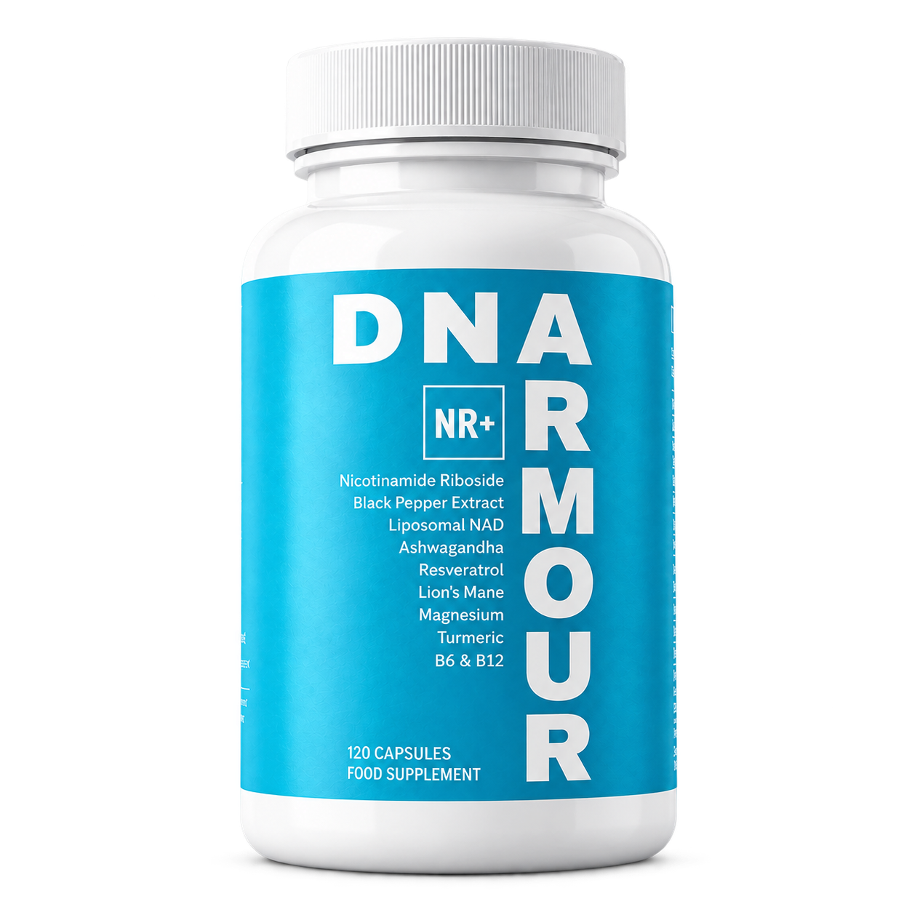

01 · Essential mineral
Magnesium
Required for energy production, muscle function and nerve signalling across hundreds of enzyme systems.
NIH fact sheet ↗The science, clearly
A measured look at established nutritional roles, early human studies and emerging healthy-ageing research.

How to read this page
Each ingredient is labelled by the maturity of the evidence discussed. Ingredient studies do not establish the effect of the finished blend.
01 · Essential mineral
Required for energy production, muscle function and nerve signalling across hundreds of enzyme systems.
NIH fact sheet ↗02 · Botanical
Some preparations may help with stress and sleep. Human studies remain small and use different preparations.
NCCIH evidence summary ↗03 · Root + extract
Turmeric supplies curcuminoids. Piperine is often paired with curcumin to increase bioavailability; clinical evidence is mixed.
NCCIH evidence summary ↗04 · Mushroom extract
Early human research has explored mood and cognitive function. Larger intervention trials are still needed.
Human evidence review ↗05 · Cellular cofactor research
NR is a precursor the body can use to make NAD+, a cofactor central to cellular energy metabolism. Trials show NR can raise blood NAD+; broader outcomes remain under study.
Randomised human trial ↗06 · Polyphenol
A plant polyphenol studied across many areas of human health, with promising signals and a need for larger clinical trials.
Clinical-trial review ↗07 · Essential vitamins
B6 supports enzyme reactions involved in metabolism. B12 has an established role in normal energy metabolism.
NIH fact sheet ↗This page explains the research landscape and does not claim that this product treats or prevents disease. Ingredient evidence does not establish the effect of the finished blend.
Nutritional information
Per daily intake of 2 capsules. 60 servings per container.
View the complete labelNRV = Nutrient Reference Value · † NRV not established